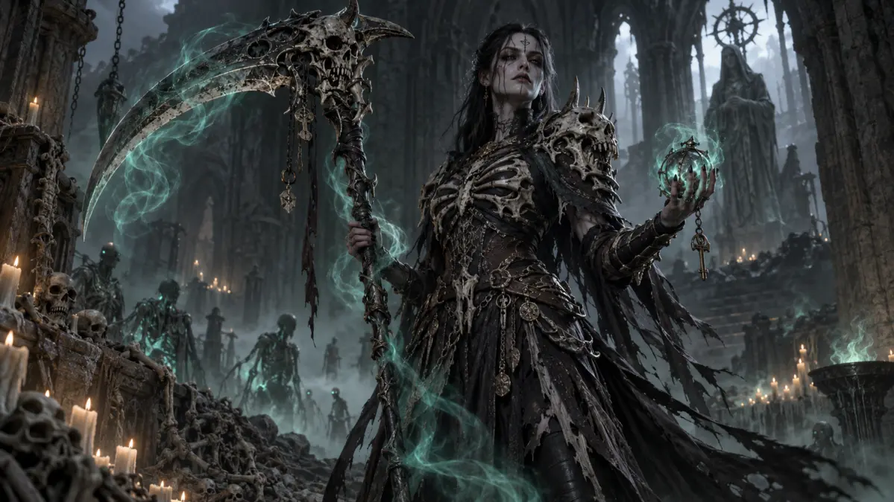
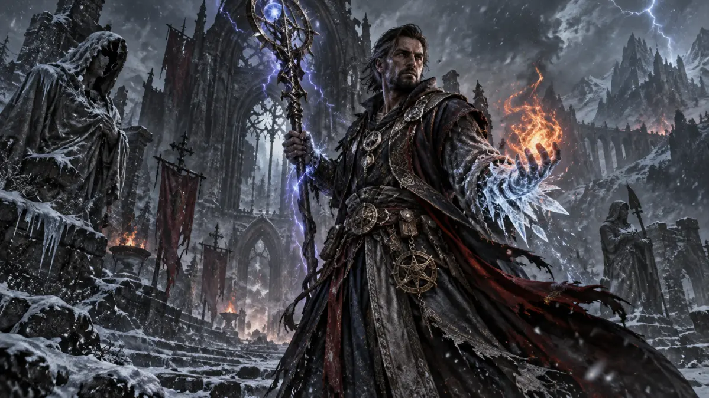

Klasse 01
Klasse 01Barbar
Klasse erkunden → Klasse 02
Klasse 02Druide
Klasse erkunden →
Klasse 03Totenbeschwörer
Klasse erkunden → Klasse 04
Klasse 04Jäger
Klasse erkunden →
Klasse 05Zauberer
Klasse erkunden → Klasse 06
Klasse 06Geistgeborener
Klasse erkunden → Klasse 07
Klasse 07Paladin
Klasse erkunden → Klasse 08
Klasse 08